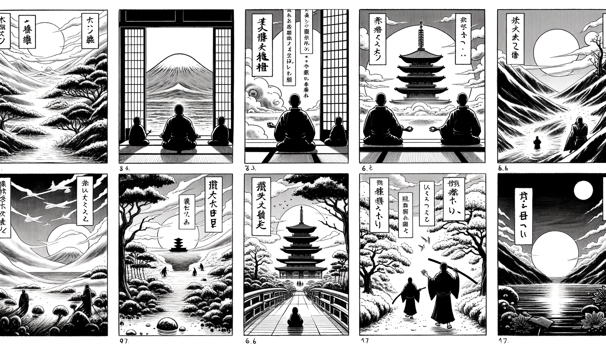

七十五巻 巻一覧
正法眼藏第24 畫餅
本ページは tools/gen_web_volumes.py が doc/正法眼蔵.txt から冒頭を抜粋して生成しています。図・詳細解説は今後の手編集で拡張できます。
出典（原文）: https://shomonji.or.jp/zazen/doc/genzou.html
（ローカル生成の全文: 全文ページ）
この巻の位置づけ（学習メモ）
道元『正法眼蔵』七十五巻の第24篇「畫餅」です。禅籍・経典への引用や語の行間が重なりやすいので、一度ですべてを要約に還元しない読み方を推奨します。問答 Bot では巻スコープにこの題名を含めると応答が安定しやすいことがあります。
語彙の足場
- 題名語：巻題「畫餅」は、道元が本章で特に扱う論点の看板です。辞書義だけに固定せず、本文中の用例で意味を確かめます。
- 引用と典故：公案・経文の引用は、一字一句の照応（何に答えているか）を押さえると全体が見えやすくなります。
- 学び方：冒頭だけでも音読し、分からない箇所は印を付けて後から問うとよいです。
本文（冒頭・自動抜粋）
出典はリポジトリ内 doc/正法眼蔵.txt です。原文の参照元: https://shomonji.or.jp/zazen/doc/genzou.html
諸佛これ證なるゆゑに、諸物これ證なり。しかあれども、一性にあらず、一心にあらず。一性にあらず一心にあらざれども、證のとき、證證さまたげず現成するなり。現成のとき、現現あひ接することなく現成すべし。これ祖宗の端的なり。一異の測度を擧して參學の力量とすることなかれ。
このゆゑにいはく、一法纔通萬法通（一法纔かに通ずれば萬法通ず）、いふところの一法通は、一法の從來せる面目を奪却するにあらず、一法を相對せしむるにあらず、一法を無對ならしむるにあらず。無對ならしむるはこれ相礙なり。通をして通の礙なからしむるに、一通これ、萬通これ、なり。一通は一法なり、一法通、これ萬法通なり。
古佛言、畫餠不充飢。
この道を參學する雲衲霞袂、この十方よりきたれる菩薩聲聞の名位をひとつにせず、かの十方よりきたれる神頭鬼面の皮肉、あつくうすし。これ古佛今佛の學道なりといへども、樹下草庵の活計なり。このゆゑに家業を正傳するに、あるいはいはく、經論の學業は眞智を熏修せしめざるゆゑにしかのごとくいふといひ、あるいは三乘一乘の教學さらに三菩提のみちにあらずといはんとして恁麼いふなりと見解せり。おほよそ假立なる法は眞に用不著なるをいはんとして、恁麼の道取ありと見解する、おほきにあやまるなり。祖宗の功業を正傳せず、佛祖の道取にくらし。この一言をあきらめざらん、たれか餘佛の道取を參究せりと聽許せん。
畫餠不能充飢と道取するは、たとへば、諸惡莫作、衆善奉行と道取するがごとし、是什麼物恁麼來と道取するがごとし、吾常於是切といふがごとし。しばらくかくのごとく參學すべし。
畫餠といふ道取、かつて見來せるともがらすくなし、知及せるものまたくあらず。なにとしてか恁麼しる、從來の一枚二枚の臭皮袋を勘過するに、疑著におよばず、親覲におよばず。ただ隣談に側耳せずして不管なるがごとし。
畫餠といふは、しるべし、父母所生の面目あり、父母未生の面目あり。米麵をもちゐて作法せしむる正當恁麼、かならずしも生不生にあらざれども、現成道成の時節なり。去來の見聞に拘牽せらるると參學すべからず。餠を畫する丹雘は、山水を畫する丹雘とひとしかるべし。いはゆる山水を畫するには靑丹をもちゐる。畫餠を畫するには米麵をもちゐる。恁麼なるゆゑに、その所用おなじ、功夫ひとしきなり。
しかあればすなはち、いま道著する畫餠といふは、一切の糊餠菜餠乳餠燒餠糍餠等、みなこれ畫圖より現成するなり。しるべし、畫等餠等法等なり。このゆゑに、いま現成するところの諸餠、ともに畫餠なり。このほかに畫餠をもとむるには、つひにいまだ相逢せず、未拈出なり。一時現なりといへども一時不現なり。しかあれども、老少の相にあらず、去來の跡にあらざるなり。しかある這頭に、畫餠國土あらはれ、成立するなり。
不充飢といふは、飢は十二時使にあらざれども、畫餠に相見する便宜あらず。畫餠を喫著するに、つひに飢をやむる功なし。飢に相待せらるる餠なし。餠に相待せらるる餠あらざるがゆゑに、活計つたはれず、家風つたはれず。飢も一條拄杖なり、横擔豎擔、千變萬化なり。餠も一身心現なり、靑黄赤白、長短方圓なり。いま山水を畫するには、靑綠丹雘をもちゐ、奇巖怪石をもちゐ、七寶四寶をもちゐる。餠を畫する經營もまたかくのごとし。人を畫するには四大五蘊をもちゐる、佛を畫するには泥龕土塊をもちゐるのみにあらず、三十二相をもちゐる、一莖草をもちゐる、三祇百劫の熏修をもちゐる。かくのごとくして、壹軸の畫佛を圖しきたれるゆゑに、一切諸佛はみな畫佛なり。一切畫佛はみな諸佛なり。畫佛と畫餠と撿點すべし。いづれか石烏龜、いづれか鐵拄杖なる。いづれか色法、いづれか心法なると、審細に功夫參究すべきなり。恁麼功夫するとき、生死去來はことごとく畫圖なり。無上菩提すなはち畫圖なり。おほよそ法界虛空、いづれも畫圖にあらざるなし。
古佛言、道成白雪千扁去、畫得靑山數軸來（道は成る白雪千扁去る、畫し得たり靑山數軸來る）。
これ大悟話なり。辨道功夫の現成せし道底なり。しかあれば、得道の正當恁麼時は、靑山白雪を數軸となづく、畫圖しきたれるなり。一動一靜しかしながら畫圖にあらざるなし。われらがいまの功夫、ただ畫よりえたるなり。十號三明、これ一軸の畫なり。根力覺道、これ一軸の畫なり。もし畫は實にあらずといはば、萬法みな實にあらず。萬法みな實にあらずは、佛法も實にあらず。佛法もし實なるには、畫餠すなはち實なるべし。
雲門匡眞大師、ちなみに僧とふ、いかにあらんかこれ超佛越祖之談。
師いはく、糊餠。
この道取、しづかに功夫すべし。糊餠すでに現成するには、超佛越祖の談を説著する祖師あり、聞著せざる鐵漢あり、聽得する學人あるべし、現成する道著あり。いま糊餠の展事投機、かならずこれ畫餠の二枚三枚なり。超佛越祖の談あり、入佛入魔の分あり。
先師道、修竹芭蕉入畫圖（修竹芭蕉畫圖に入る）。
この道取は、長短を超越せるものの、ともに畫圖の參學ある道取なり。修竹は長竹なり。陰陽の運なりといへども、陰陽をして運ならしむるに、修竹の年月あり。その年月陰陽、はかることうべからざるなり。大聖は陰陽を覰見すといへども、大聖、陰陽を測度する事あたはず。陰陽ともに法等なり、測度等なり、道等なるがゆゑに。いま外道二乘の心目にかかはる陰陽にはあらず。これは修竹の陰陽なり、修竹の歩暦なり、修竹の世界なり。修竹の眷屬として、十方諸佛あり。しるべし、天地乾坤は、修竹の根莖枝葉なり。このゆゑに天地乾坤をして長久ならしむ。大海須彌、盡十方界をして堅牢ならしむ。拄杖竹箆をして一老一不老ならしむ。芭蕉は、地水火風空、心意識智慧を根莖枝葉、花果光色とせるゆゑに、秋風を帶して秋風にやぶる。のこる一塵なし、淨潔といひぬべし。眼裏に筋骨なし、色裡に膠𦡬あらず。當處の解脱あり。なほ速疾に拘牽せられざれば、須叟刹那等の論におよばず。この力量を擧して、地水火風を活計ならしめ、心意識智を大死ならしむ。かるがゆゑに、この家業に春秋冬夏を調度として受業しきたる。
いま修竹芭蕉の全消息、これ畫圖なり。これによりて、竹聲を聞著して大悟せんものは、龍蛇ともに畫圖なるべし。凡聖の情量と疑著すべからず。那竿得恁麼長なり、這竿得恁麼短なり。這竿得恁麼長なり、那竿得恁麼短なり。これみな畫圖なるがゆゑに、長短の圖、かならず相符するなり。長畫あれば、短畫なきにあらず。この道理、あきらかに參究すべし。ただまさに盡界盡法は畫圖なるがゆゑに、人法は畫より現じ、佛祖は畫より成ずるなり。
しかあればすなはち、畫餠にあらざれば充飢の藥なし、畫飢にあらざれば人に相逢せず。畫充にあらざれば力量あらざるなり。おほよそ、飢に充し、不飢に充し、飢を充せず、不飢を充せざること、畫飢にあらざれば不得なり、不道なるなり。しばらく這箇は畫餠なることを參學すべし。この宗旨を參學するとき、いささか轉物物轉の功徳を身心に究盡するなり。この功徳いまだ現前せざるがごときは、學道の力量いまだ現成せざるなり。この功徳を現成せしむる、證畫現成なり。
正法眼藏畫餠第二十四
爾時仁治三年壬寅十一月初五日在于觀音導利興聖寶林寺示衆
仁治壬寅十一月初七日在興聖客司書寫之 懷弉
図解（4コマ・AI生成）
教義の根拠は本文・出典に従い、漫画は比喩の補助に留めてください。

深掘り（読解のコツ）
- 道元文は定義の羅列に見えても、多くの場合誤解への遮断と正伝の姿勢が背骨になっています。
- 「当体」「現成」「即」などの語が出たら、その巻独自の差別相にどう接続しているかをメモしておくとよいです。